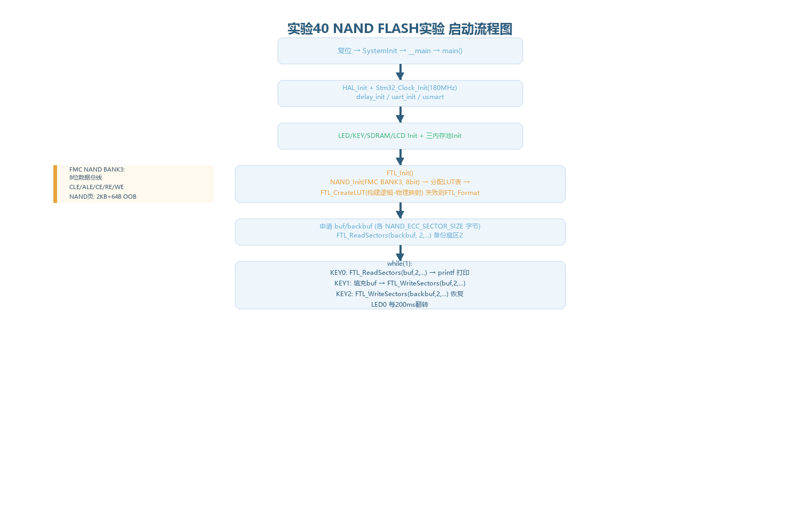
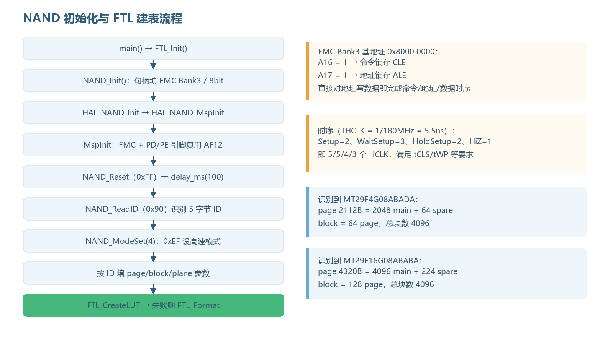
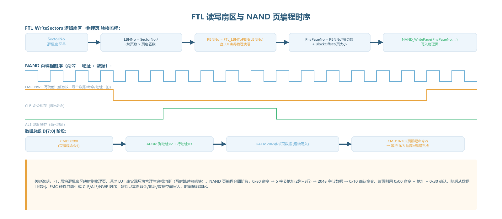
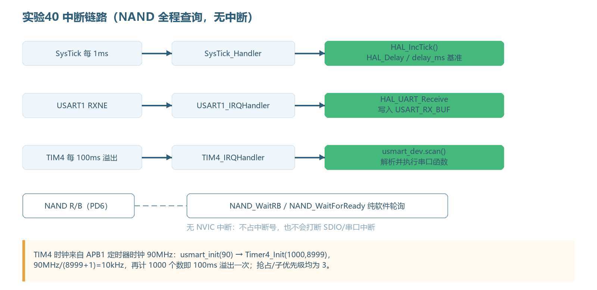
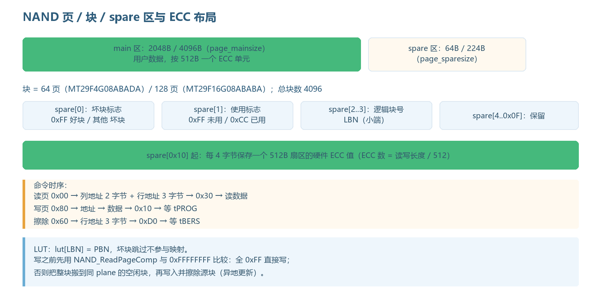

01 实验目标与硬件资源
通过 FMC 的 NAND 控制器访问 NAND FLASH，并在其上实现坏块管理与扇区读写
NAND FLASH 与 SD 卡一样是块设备，但多了两个硬约束：写入前必须整块擦除、出厂就可能存在坏块。本实验分两层完成：底层 nand.c 负责 FMC 时序、命令/地址/数据收发与硬件 ECC；上层 ftl.c 负责坏块表（LUT）、逻辑扇区到物理页的转换，以及“异地更新”式的写算法，使上层可以像访问连续扇区一样读写。
| 对比项 | 实验39 SD 卡 | 实验40 NAND（本页） | 实验41 FATFS |
|---|---|---|---|
| 接口 | SDIO（PC8~PC12/PD2） | FMC Bank3（PD/PE 复用） | 沿用 NAND 或 SD |
| 最小擦除单位 | 扇区（512B）可覆写 | 块（64/128 页） | 簇 |
| 坏块管理 | 卡内部处理 | 软件 LUT + 坏块标记 | 由 FTL 屏蔽 |
| 上层接口 | SD_ReadDisk | FTL_ReadSectors | f_read |
| 信号 | 引脚 | FMC 功能 | 说明 |
|---|---|---|---|
| NCE3 | PG9 | FMC_NCE3 | 片选，Bank3 起始 0x80000000 |
| CLE | PD11 | FMC_CLE | 命令锁存，地址线 A16 |
| ALE | PD12 | FMC_ALE | 地址锁存，地址线 A17 |
| RE / WE | PD4 / PD5 | FMC_NOE / FMC_NWE | 读使能 / 写使能 |
| D0~D7 | PD14,PD15,PD0,PD1,PE7~PE10 | FMC_D0~D7 | 8 位数据总线 |
| R/B | PD6 | 普通输入（上拉） | NAND_RB 软件轮询 |
FMC Bank3 0x80000000
8bit 总线
MT29F4G08ABADA 512MB
MT29F16G08ABABA 2GB
硬件 ECC 4B/512B
THCLK 5.5ns
本实验的容量显示算式是
(block_totalnum/1024)*(page_mainsize/1024)*block_pagenum，结果单位 MB。以 MT29F4G08ABADA 为例：4096/1024=4，2048/1024=2，4×2×64=512，正好是 512MB。02 目录与文件分工
nand.c 管时序与 ECC，ftl.c 管坏块与映射，main.c 只负责调用
| 文件 | 职责 | 本页关注点 |
|---|---|---|
USER/main.c | 初始化、容量显示、三个按键分支 | while(FTL_Init()) 重试、备份扇区 |
USER/stm32f4xx_it.c | 异常与 SysTick | SysTick_Handler → HAL_IncTick() |
USER/system_stm32f4xx.c | SystemInit | FPU、RCC 复位、VTOR |
CORE/startup_stm32f429xx.s | 向量表与复位入口 | 栈 0x400 / 堆 0x200 |
SYSTEM/sys/sys.c | 时钟与中断开关 | Stm32_Clock_Init、INTX_DISABLE |
SYSTEM/delay/delay.c | us/ms 延时 | 擦除/编程后的等待 |
SYSTEM/usart/usart.c | 串口与 printf 重定向 | 调试输出、USMART 通道 |
HARDWARE/NAND/nand.c | NAND 底层：ID、读页、写页、擦块、ECC | NAND_Init、NAND_WritePage |
HARDWARE/NAND/ftl.c | FTL：LUT、坏块、扇区读写 | FTL_Init、FTL_WriteSectors |
USMART/usmart.c | 串口命令行调试组件 | TIM4 每 100ms 扫描 |
MALLOC/malloc.c | 内存池 | LUT 与两个 512B 缓冲 |
HALLIB/.../stm32f4xx_hal_nand.c | FMC NAND 时序配置 | HAL_NAND_Init 写 FMC 寄存器 |
调用关系是单向的：main → FTL_* → NAND_* → FMC 寄存器。应用层永远不需要知道物理块号，也不直接碰 spare 区，这正是 FTL 存在的意义。
03 启动流程总览
从上电到 FTL 可用，初始化顺序与 SD 卡实验一致，但多了一个“建表/格式化”阶段

FTL_Init() 是整页的分水岭：它先调 NAND_Init() 拿到芯片参数，再为 LUT 申请 block_totalnum×2 字节内存，然后尝试 FTL_CreateLUT(1)。如果 LUT 建不起来（有效块少于 100），就自动执行 FTL_Format() 重建逻辑块编号。
main() 全文
int main(void)
{
u8 key,t=0;
u16 i;
u8 *buf;
u8 *backbuf;
HAL_Init(); // Flash 缓存 + 优先级分组 2 + 1ms 时基
Stm32_Clock_Init(360,25,2,8); // SYSCLK=180MHz，FMC 时基 THCLK=5.5ns
delay_init(180); // fac_us=180
uart_init(115200); // USART1：PA9/PA10
usmart_dev.init(90); // TIM4 扫描，APB1 定时器时钟 90MHz
LED_Init(); // PB0/PB1
KEY_Init(); // PA0/PC13/PH2/PH3
SDRAM_Init(); // 外部 SDRAM
LCD_Init(); // LCD
my_mem_init(SRAMIN); // 内部内存池
my_mem_init(SRAMEX); // 外部内存池
my_mem_init(SRAMCCM); // CCM 内存池，本实验只初始化未使用
POINT_COLOR=RED;
LCD_ShowString(30,50,200,16,16,"Apollo STM32F4/F7");
LCD_ShowString(30,70,200,16,16,"NAND TEST");
LCD_ShowString(30,90,200,16,16,"ATOM@ALIENTEK");
LCD_ShowString(30,110,200,16,16,"2016/2/16");
LCD_ShowString(30,130,200,16,16,"KEY0:Read Sector 2");
LCD_ShowString(30,150,200,16,16,"KEY1:Write Sector 2");
LCD_ShowString(30,170,200,16,16,"KEY2:Recover Sector 2");
while(FTL_Init()) // 非 0 表示 NAND 或 FTL 初始化失败，重试
{
LCD_ShowString(30,190,200,16,16,"NAND Error!");
delay_ms(500);
LCD_ShowString(30,190,200,16,16,"Please Check");
delay_ms(500);
LED0=!LED0; // DS0 闪烁
}
backbuf=mymalloc(SRAMIN,NAND_ECC_SECTOR_SIZE); // 备份缓冲 512B
buf=mymalloc(SRAMIN,NAND_ECC_SECTOR_SIZE); // 数据缓冲 512B
POINT_COLOR=BLUE;
sprintf((char*)buf,"NAND Size:%dMB",(nand_dev.block_totalnum/1024)*(nand_dev.page_mainsize/1024)*nand_dev.block_pagenum);
LCD_ShowString(30,190,200,16,16,buf); // 显示容量，如 NAND Size:512MB
FTL_ReadSectors(backbuf,2,NAND_ECC_SECTOR_SIZE,1);// 预读扇区 2，便于恢复
while(1)
{
key=KEY_Scan(0);
switch(key)
{
case KEY0_PRES: // 读扇区 2
key=FTL_ReadSectors(buf,2,NAND_ECC_SECTOR_SIZE,1);
if(key==0)//读取成功
{
LCD_ShowString(30,210,200,16,16,"USART1 Sending Data... ");
printf("Sector 2 data is:\r\n");
for(i=0;i<NAND_ECC_SECTOR_SIZE;i++)
{
printf("%x ",buf[i]);//输出数据
}
printf("\r\ndata end.\r\n");
LCD_ShowString(30,210,200,16,16,"USART1 Send Data Over! ");
}
break;
case KEY1_PRES: // 写扇区 2
for(i=0;i<NAND_ECC_SECTOR_SIZE;i++)buf[i]=i+t;// 用 t 制造变化的数据
LCD_ShowString(30,210,210,16,16,"Writing data to sector..");
key=FTL_WriteSectors(buf,2,NAND_ECC_SECTOR_SIZE,1);
if(key==0)LCD_ShowString(30,210,200,16,16,"Write data successed ");
else LCD_ShowString(30,210,200,16,16,"Write data failed ");
break;
case KEY2_PRES: // 用备份恢复扇区 2
LCD_ShowString(30,210,210,16,16,"Recovering data... ");
key=FTL_WriteSectors(backbuf,2,NAND_ECC_SECTOR_SIZE,1);
if(key==0)LCD_ShowString(30,210,200,16,16,"Recovering data OK ");
else LCD_ShowString(30,210,200,16,16,"Recovering data failed ");
break;
}
t++;
delay_ms(10);
if(t==20)
{
LED0=!LED0; // 200ms 心跳
t=0;
}
}
}
关键逻辑说明
- 为什么先
usmart_dev.init(90)再初始化外设：USMART 初始化只配置 TIM4 与函数表，不依赖 NAND；放在前面可以在后续任何阶段用串口命令干预调试。 while(FTL_Init())的重试代价：首次运行若需格式化，会逐块检查坏块并擦除，耗时可能达到秒级；卡住时 DS0 闪烁是正常提示，不是死机。- 两个缓冲为什么都要 512B：
NAND_ECC_SECTOR_SIZE定义为 512，只有按 512 对齐读写才会启用硬件 ECC；backbuf保存写入前的原始内容，实现“可恢复写”。 - 预读扇区 2 的意义：源码注释写明“防止乱写导致文件系统损坏”，因为扇区 2 常被 FAT 区使用，先备份再随便写、再按 KEY2 恢复，是安全的实验方式。
- 容量算式为什么能直接乘：块数/1024 与页大小/1024 都是整数除法，先转成 KB 再乘页数，避免
block_totalnum×page_mainsize在 32 位下溢出。
04 启动文件与向量表
Reset_Handler 只做两件事：调 SystemInit、跳 __main
Stack_Size EQU 0x400; // 主栈 1KB Heap_Size EQU 0x200; // 标准库堆 512B AREA RESET, DATA, READONLY EXPORT __Vectors __Vectors DCD __initial_sp // 0：栈顶 DCD Reset_Handler // 1：复位入口 DCD NMI_Handler DCD HardFault_Handler DCD MemManage_Handler DCD BusFault_Handler DCD UsageFault_Handler DCD 0 DCD 0 DCD 0 DCD 0 DCD SVC_Handler DCD DebugMon_Handler DCD 0 DCD PendSV_Handler DCD SysTick_Handler // 1ms 时基 // …TIM4_IRQHandler 等外设中断入口在表的后半段… Reset_Handler PROC EXPORT Reset_Handler [WEAK] IMPORT SystemInit IMPORT __main LDR R0, =SystemInit BLX R0 // 芯片级初始化 LDR R0, =__main BX R0 // C 库初始化后进入 main ENDP
关键逻辑说明
- 向量表位置：默认位于内部 Flash 0x08000000，
SystemInit会把SCB->VTOR指向这里；若做 Bootloader 需要改VECT_TAB_OFFSET。 - 栈大小与 FTL 的关系：FTL 与 NAND 函数大多是“小局部变量 + 全局缓冲”，1KB 栈足够；但
FTL_SearchBadBlock若被启用，缓冲是从内存池申请的，也不占栈。 - 堆 0x200 不等于内存池：工程用
mymalloc管理 SRAMIN/SRAMEX/SRAMCCM 三块池子，标准库堆只服务于sprintf等少数调用。 - 弱符号覆盖：
TIM4_IRQHandler在usmart.c中定义，SysTick_Handler在stm32f4xx_it.c中定义，都靠覆盖启动文件里的[WEAK]空实现生效。
05 SystemInit 与 HAL_Init
HAL_Init 的优先级分组会直接影响 TIM4、USART1 与 SysTick 的优先级解释
void SystemInit(void)
{
#if (__FPU_PRESENT == 1) && (__FPU_USED == 1)
SCB->CPACR |= ((3UL << 10*2)|(3UL << 11*2)); // 开 FPU
#endif
RCC->CR |= (uint32_t)0x00000001; // HSI 开
RCC->CFGR = 0x00000000; // 时钟源回 HSI
RCC->CR &= (uint32_t)0xFEF6FFFF; // 关 HSEON/CSSON/PLLON
RCC->PLLCFGR = 0x24003010;
RCC->CR &= (uint32_t)0xFFFBFFFF;
RCC->CIR = 0x00000000;
SCB->VTOR = FLASH_BASE | VECT_TAB_OFFSET; // 向量表基址
}
HAL_StatusTypeDef HAL_Init(void)
{
__HAL_FLASH_INSTRUCTION_CACHE_ENABLE();
__HAL_FLASH_DATA_CACHE_ENABLE();
__HAL_FLASH_PREFETCH_BUFFER_ENABLE(); // 三条缓存全开
HAL_NVIC_SetPriorityGrouping(NVIC_PRIORITYGROUP_2); // 2 位抢占 + 2 位子优先级
HAL_InitTick(TICK_INT_PRIORITY); // 0x0F，SysTick 起振
HAL_MspInit(); // 空实现
return HAL_OK;
}
关键逻辑说明
- SystemInit 无参无返回：由汇编直接
BLX调用，不能依赖 C 运行时，全部是寄存器操作。 - HAL_Init 的返回值：固定返回
HAL_OK，调用方通常不检查；真正可能失败的是后面的HAL_RCC_OscConfig。 - 分组 2 的后果：TIM4 的 3/3、USART1 的 3/3 都是“最低抢占 + 最低子优先级”，SysTick 的 0x0F 实际也落在最低组，所以三者之间不会形成复杂嵌套。
- 缓存与 NAND 性能：指令/数据缓存对 FMC 访问无效（外部存储不经过 Flash 缓存），但能加速 FTL 的查表与循环代码。
06 时钟树与 FMC 时序基准
FMC 的 THCLK 就是 HCLK 180MHz，所有 NAND 时序参数都以 5.5ns 为 1 个数
| 节点 | 算式 | 结果 | 与 NAND 的关系 |
|---|---|---|---|
| HSE | 晶振 | 25MHz | PLL 输入 |
| Fvco | 25 × 360 / 25 | 360MHz | PLL 输出 |
| SYSCLK | 360 / 2 | 180MHz | 系统主频 |
| HCLK | SYSCLK / 1 | 180MHz | FMC 内核时钟 THCLK = 5.5ns |
| PCLK1 | HCLK / 4 | 45MHz | APB1 外设 |
| APB1 定时器时钟 | PCLK1 × 2 | 90MHz | TIM4 计数基准 |
| PCLK2 | HCLK / 2 | 90MHz | APB2 外设 |
| FMC 时序单位 | 1 / 180MHz | 5.5ns | Setup/Wait/Hold/HiZ 的步长 |
void Stm32_Clock_Init(u32 plln,u32 pllm,u32 pllp,u32 pllq)
{
HAL_StatusTypeDef ret = HAL_OK;
RCC_OscInitTypeDef RCC_OscInitStructure;
RCC_ClkInitTypeDef RCC_ClkInitStructure;
__HAL_RCC_PWR_CLK_ENABLE();
__HAL_PWR_VOLTAGESCALING_CONFIG(PWR_REGULATOR_VOLTAGE_SCALE1); // 电压等级 1
RCC_OscInitStructure.OscillatorType=RCC_OSCILLATORTYPE_HSE;
RCC_OscInitStructure.HSEState=RCC_HSE_ON;
RCC_OscInitStructure.PLL.PLLState=RCC_PLL_ON;
RCC_OscInitStructure.PLL.PLLSource=RCC_PLLSOURCE_HSE;
RCC_OscInitStructure.PLL.PLLM=pllm;
RCC_OscInitStructure.PLL.PLLN=plln;
RCC_OscInitStructure.PLL.PLLP=pllp;
RCC_OscInitStructure.PLL.PLLQ=pllq;
ret=HAL_RCC_OscConfig(&RCC_OscInitStructure);
if(ret!=HAL_OK) while(1);
ret=HAL_PWREx_EnableOverDrive(); // 180MHz 必须 OverDrive
if(ret!=HAL_OK) while(1);
RCC_ClkInitStructure.ClockType=(RCC_CLOCKTYPE_SYSCLK|RCC_CLOCKTYPE_HCLK|RCC_CLOCKTYPE_PCLK1|RCC_CLOCKTYPE_PCLK2);
RCC_ClkInitStructure.SYSCLKSource=RCC_SYSCLKSOURCE_PLLCLK;
RCC_ClkInitStructure.AHBCLKDivider=RCC_SYSCLK_DIV1;
RCC_ClkInitStructure.APB1CLKDivider=RCC_HCLK_DIV4;
RCC_ClkInitStructure.APB2CLKDivider=RCC_HCLK_DIV2;
ret=HAL_RCC_ClockConfig(&RCC_ClkInitStructure,FLASH_LATENCY_5);
if(ret!=HAL_OK) while(1);
}
关键逻辑说明（时钟）
- 参数：
plln/pllm/pllp/pllq分别对应倍频、前分频、系统分频、48MHz 域分频；本实验传入 360/25/2/8。 - 返回值：函数无返回值；失败时
while(1)停机，便于调试器定位。 - 为什么 FMC 用 HCLK：FMC 挂在 AHB 总线上，时序寄存器以 HCLK 周期计数，所以 180MHz 决定 5.5ns 的步长，改主频必须重新核算
SetupTime等参数。 - APB1 定时器为什么是 90MHz：APB1 分频系数为 4（≠1），定时器时钟自动 ×2，因此 TIM4 是 90MHz，而
usmart_init(90)正是按这个值算分频。
delay 与 NAND_Delay
void delay_init(u8 SYSCLK)
{
HAL_SYSTICK_CLKSourceConfig(SYSTICK_CLKSOURCE_HCLK); // SysTick 用 HCLK
fac_us=SYSCLK; // 180 → 1us 计 180 个数
}
// NAND 的短延时：一个 i-- 约 4ns（180MHz 下约 2 条指令）
void NAND_Delay(vu32 i)
{
while(i>0)i--; // 用于 tADL / tWHR / tRHW
}
// 擦除后必须等够 tBERS（典型 3.5ms，最大 10ms）
u8 NAND_EraseBlock(u32 BlockNum)
{
if(nand_dev.id==MT29F16G08ABABA)BlockNum<<=7; // 块号→页号：×128
else if(nand_dev.id==MT29F4G08ABADA)BlockNum<<=6; // ×64
*(vu8*)(NAND_ADDRESS|NAND_CMD)=NAND_ERASE0;
*(vu8*)(NAND_ADDRESS|NAND_ADDR)=(u8)BlockNum;
*(vu8*)(NAND_ADDRESS|NAND_ADDR)=(u8)(BlockNum>>8);
*(vu8*)(NAND_ADDRESS|NAND_ADDR)=(u8)(BlockNum>>16);
*(vu8*)(NAND_ADDRESS|NAND_CMD)=NAND_ERASE1;
delay_ms(NAND_TBERS_DELAY); // 宏值为 4，保证 ≥3.5ms
if(NAND_WaitForReady()!=NSTA_READY)return NSTA_ERROR;
return 0;
}
关键逻辑说明（延时与擦除）
- 参数与返回值：
NAND_Delay(vu32 i)是忙等循环，无返回值；NAND_EraseBlock(u32 BlockNum)返回 0 成功、NSTA_ERROR失败。 - 块号左移的意义：NAND 擦除命令接收的是“行地址（页地址）”，块内页数为 64 或 128，所以块号要 ×64 或 ×128 才是该块第一页的地址。
- 为什么擦除要
delay_ms(4)：擦除是内部高压操作，R/B 拉低到拉高可能持续数毫秒；源码升级说明 V1.5 专门加了 ms 级延时，防止“还没擦完就读状态”导致误判。 NAND_Delay不是精确延时：注释写“一个 i++ 至少 4ns”，只用于满足 tADL/tWHR 这类百纳秒级要求，不能用它做毫秒计时。
07 NAND 初始化与 FMC 引脚配置
Bank3、8 位总线、四个时序参数，缺一项就读不到 ID

u8 NAND_Init(void)
{
FMC_NAND_PCC_TimingTypeDef ComSpaceTiming,AttSpaceTiming;
NAND_Handler.Instance=FMC_NAND_DEVICE;
NAND_Handler.Init.NandBank=FMC_NAND_BANK3; // 片选 NCE3
NAND_Handler.Init.Waitfeature=FMC_NAND_PCC_WAIT_FEATURE_DISABLE; // 不用硬件等待
NAND_Handler.Init.MemoryDataWidth=FMC_NAND_PCC_MEM_BUS_WIDTH_8; // 8 位数据
NAND_Handler.Init.EccComputation=FMC_NAND_ECC_DISABLE; // 初始化阶段先关 ECC
NAND_Handler.Init.ECCPageSize=FMC_NAND_ECC_PAGE_SIZE_2048BYTE;
NAND_Handler.Init.TCLRSetupTime=0; // tCLR=(0+2+2)×5.5ns
NAND_Handler.Init.TARSetupTime=1; // tAR=(1+2+2)×5.5ns
ComSpaceTiming.SetupTime=2; // 建立 2 个 HCLK
ComSpaceTiming.WaitSetupTime=3; // 等待 3 个 HCLK
ComSpaceTiming.HoldSetupTime=2; // 保持 2 个 HCLK
ComSpaceTiming.HiZSetupTime=1; // 高阻 1 个 HCLK
AttSpaceTiming.SetupTime=2;
AttSpaceTiming.WaitSetupTime=3;
AttSpaceTiming.HoldSetupTime=2;
AttSpaceTiming.HiZSetupTime=1;
HAL_NAND_Init(&NAND_Handler,&ComSpaceTiming,&AttSpaceTiming);
NAND_Reset(); // 0xFF 复位
delay_ms(100);
nand_dev.id=NAND_ReadID(); // 0x90 读 5 字节 ID
NAND_ModeSet(4); // 0xEF 设置 Mode4 高速
if(nand_dev.id==MT29F16G08ABABA)
{
nand_dev.page_totalsize=4320;
nand_dev.page_mainsize=4096;
nand_dev.page_sparesize=224;
nand_dev.block_pagenum=128;
nand_dev.plane_blocknum=2048;
nand_dev.block_totalnum=4096;
}
else if(nand_dev.id==MT29F4G08ABADA)
{
nand_dev.page_totalsize=2112;
nand_dev.page_mainsize=2048;
nand_dev.page_sparesize=64;
nand_dev.block_pagenum=64;
nand_dev.plane_blocknum=2048;
nand_dev.block_totalnum=4096;
}else return 1; // 不认识的 ID
return 0;
}
关键逻辑说明（NAND_Init）
- 作用：把 NAND 芯片的物理参数（页大小、块页数、总块数）填进全局
nand_dev，后续所有地址计算都依赖它。 - 参数与返回值：无入参；返回 0 成功、1 表示 ID 不在支持列表。
- ECC 为什么先关：
EccComputation只决定 FMC 是否自动累计 ECC；真正的 ECC 使能是在读写页函数里对PCR3的 bit6 逐段开关，这样能按 512B 分段取 ECC 值。 - TCLR/TAR 的算式：FMC 手册给出 tCLR=(TCLR+TSET+2)×THCLK、tAR=(TAR+TSET+2)×THCLK，代码里 TSET 即 SetupTime=2，所以 TCLR=0 得 4×5.5=22ns，TAR=1 得 5×5.5=27.5ns。
- Mode4 的意义：0xEF 命令把芯片特性寄存器 P1 设为 4，缩短 tADL/tWHR 等内部延时，使高速读写成为可能；不同型号需查数据手册确认。
HAL_NAND_MspInit：引脚复用
void HAL_NAND_MspInit(NAND_HandleTypeDef *hnand)
{
GPIO_InitTypeDef GPIO_Initure;
__HAL_RCC_FMC_CLK_ENABLE(); // FMC 时钟
__HAL_RCC_GPIOD_CLK_ENABLE();
__HAL_RCC_GPIOE_CLK_ENABLE();
__HAL_RCC_GPIOG_CLK_ENABLE();
//PD6 R/B
GPIO_Initure.Pin=GPIO_PIN_6;
GPIO_Initure.Mode=GPIO_MODE_INPUT; // 普通输入，软件读电平
GPIO_Initure.Pull=GPIO_PULLUP;
GPIO_Initure.Speed=GPIO_SPEED_HIGH;
HAL_GPIO_Init(GPIOD,&GPIO_Initure);
//PG9 NCE3
GPIO_Initure.Pin=GPIO_PIN_9;
GPIO_Initure.Mode=GPIO_MODE_AF_PP; // 复用推挽
GPIO_Initure.Pull=GPIO_NOPULL;
GPIO_Initure.Speed=GPIO_SPEED_HIGH;
GPIO_Initure.Alternate=GPIO_AF12_FMC; // AF12 = FMC
HAL_GPIO_Init(GPIOG,&GPIO_Initure);
//PD0,1,4,5,11,12,14,15：D2/D3/NOE/NWE/CLE/ALE/D0/D1
GPIO_Initure.Pin=GPIO_PIN_0|GPIO_PIN_1|GPIO_PIN_4|GPIO_PIN_5|\
GPIO_PIN_11|GPIO_PIN_12|GPIO_PIN_14|GPIO_PIN_15;
GPIO_Initure.Pull=GPIO_NOPULL;
HAL_GPIO_Init(GPIOD,&GPIO_Initure);
//PE7,8,9,10：D4~D7
GPIO_Initure.Pin=GPIO_PIN_7|GPIO_PIN_8|GPIO_PIN_9|GPIO_PIN_10;
HAL_GPIO_Init(GPIOE,&GPIO_Initure);
}
关键逻辑说明（MspInit）
- 作用与时机：由
HAL_NAND_Init()内部回调，负责时钟与 GPIO；main 不需要手动调用。 - 参数与返回值：入参
hnand句柄（本函数未使用）；无返回值。 - 为什么 R/B 不用复用：FMC 的 NWAIT 功能需要额外时序配合，本工程直接把它当普通 IO 读
PDin(6)，用NAND_WaitRB轮询，简单可靠。 - 引脚分组依据：AF12 是 FMC 的复用号；PD0/PD1 是 D2/D3，PD14/PD15 是 D0/D1，PE7~PE10 是 D4~D7，PD4/PD5 是 RE/WE，PD11/PD12 是 CLE/ALE。
08 FTL 读写时序与页编程
逻辑扇区 → LUT → 物理页 → FMC 命令/地址/数据，一条写请求要跨四层

写扇区的难点不在“写”，而在“不能原地改写”：NAND 的编程只能把 1 变 0，要让某位回到 1 必须整块擦除。因此 FTL 的策略是——若目标区域当前全是 0xFF（擦除态），直接写；否则把整块数据搬到同 plane 的空闲块，写入新数据后再擦除源块，最后修正 LUT。这个过程叫“异地更新”。
u8 FTL_WriteSectors(u8 *pBuffer,u32 SectorNo,u16 SectorSize,u32 SectorCount)
{
u8 flag=0;
u16 temp;
u32 i=0;
u16 wsecs; // 单次写入的扇区数
u32 wlen;
u32 LBNNo; // 逻辑块号
u32 PBNNo; // 物理块号
u32 PhyPageNo; // 物理页号
u32 PageOffset; // 页内偏移
u32 BlockOffset;// 块内偏移
u32 markdpbn=0XFFFFFFFF;
for(i=0;i<SectorCount;i++)
{
LBNNo=(SectorNo+i)/(nand_dev.block_pagenum*(nand_dev.page_mainsize/SectorSize));
PBNNo=FTL_LBNToPBN(LBNNo); // 查 LUT
if(PBNNo>=nand_dev.block_totalnum)return 1;
BlockOffset=((SectorNo+i)%(nand_dev.block_pagenum*(nand_dev.page_mainsize/SectorSize)))*SectorSize;
PhyPageNo=PBNNo*nand_dev.block_pagenum+BlockOffset/nand_dev.page_mainsize;
PageOffset=BlockOffset%nand_dev.page_mainsize;
temp=nand_dev.page_mainsize-PageOffset; // 本页还能放多少字节
temp/=SectorSize;
wsecs=SectorCount-i;
if(wsecs>=temp)wsecs=temp;
wlen=wsecs*SectorSize;
flag=NAND_ReadPageComp(PhyPageNo,PageOffset,0XFFFFFFFF,wlen/4,&temp); // 判断是否全 0xFF
if(flag)return 2;
if(temp==(wlen/4)) flag=NAND_WritePage(PhyPageNo,PageOffset,pBuffer,wlen); // 全 1，直接写
else flag=1; // 已有数据，需搬块
if(flag==0&&(markdpbn!=PBNNo))
{
flag=FTL_UsedBlockMark(PBNNo); // spare[1] 写 0xCC
markdpbn=PBNNo;
}
if(flag) // 搬块 + 写入
{
temp=((u32)nand_dev.block_pagenum*nand_dev.page_mainsize-BlockOffset)/SectorSize;
wsecs=SectorCount-i;
if(wsecs>=temp)wsecs=temp;
wlen=wsecs*SectorSize;
flag=FTL_CopyAndWriteToBlock(PhyPageNo,PageOffset,pBuffer,wlen);
if(flag)return 3;
}
i+=wsecs-1;
pBuffer+=wlen;
}
return 0;
}
关键逻辑说明（FTL_WriteSectors）
- 作用：把“连续逻辑扇区”翻译成若干物理页写操作，必要时触发整块搬移，保证 NAND 的物理限制被完全屏蔽。
- 参数：
pBuffer数据、SectorNo起始逻辑扇区、SectorSize扇区大小（≤512）、SectorCount数量；返回 0 成功，1/2/3 分别表示物理块越界、读校验失败、搬块失败。 - 一个块能放多少扇区：
block_pagenum × (page_mainsize / SectorSize)，4G 芯片为 64×4=256 个 512B 扇区，所以扇区 2 落在块 0、页 0、页内偏移 1024。 - 为什么先读再写：
NAND_ReadPageComp与 0xFFFFFFFF 比较，既判断是否需要搬块，也顺带确认该页可读（坏块会在这一步暴露）。 - 搬块为何只能同 plane：NAND 的内部拷贝命令要求源/目的页在同一个 plane，
FTL_FindSamePlaneUnusedBlock用块号奇偶判断 plane，跨 plane 会直接失败。
NAND_WritePage：命令、地址、数据与 ECC
u8 NAND_WritePage(u32 PageNum,u16 ColNum,u8 *pBuffer,u16 NumByteToWrite)
{
vu16 i=0;
u8 res=0;
u8 eccnum=0; // 需要计算 ECC 的 512B 段数
u8 eccstart=0; // 第一个 ECC 所属的段号
*(vu8*)(NAND_ADDRESS|NAND_CMD)=NAND_WRITE0; // 0x80
*(vu8*)(NAND_ADDRESS|NAND_ADDR)=(u8)ColNum; // 列地址低字节
*(vu8*)(NAND_ADDRESS|NAND_ADDR)=(u8)(ColNum>>8);// 列地址高字节
*(vu8*)(NAND_ADDRESS|NAND_ADDR)=(u8)PageNum; // 行地址 3 字节
*(vu8*)(NAND_ADDRESS|NAND_ADDR)=(u8)(PageNum>>8);
*(vu8*)(NAND_ADDRESS|NAND_ADDR)=(u8)(PageNum>>16);
NAND_Delay(NAND_TADL_DELAY); // 等 tADL
if(NumByteToWrite%NAND_ECC_SECTOR_SIZE) // 非 512 整数倍，不算 ECC
{
for(i=0;i<NumByteToWrite;i++)
{
*(vu8*)NAND_ADDRESS=*(vu8*)pBuffer++;
}
}else
{
eccnum=NumByteToWrite/NAND_ECC_SECTOR_SIZE;
eccstart=ColNum/NAND_ECC_SECTOR_SIZE;
for(res=0;res<eccnum;res++)
{
FMC_Bank2_3->PCR3|=1<<6; // 使能 ECC
for(i=0;i<NAND_ECC_SECTOR_SIZE;i++)
{
*(vu8*)NAND_ADDRESS=*(vu8*)pBuffer++;
}
while(!(FMC_Bank2_3->SR3&(1<<6))); // 等 FIFO 空
nand_dev.ecc_hdbuf[res+eccstart]=FMC_Bank2_3->ECCR3; // 取硬件 ECC
FMC_Bank2_3->PCR3&=~(1<<6);
}
i=nand_dev.page_mainsize+0X10+eccstart*4; // ECC 存到 spare 0x10 起
NAND_Delay(NAND_TADL_DELAY);
*(vu8*)(NAND_ADDRESS|NAND_CMD)=0X85; // 随机写命令
*(vu8*)(NAND_ADDRESS|NAND_ADDR)=(u8)i;
*(vu8*)(NAND_ADDRESS|NAND_ADDR)=(u8)(i>>8);
NAND_Delay(NAND_TADL_DELAY);
pBuffer=(u8*)&nand_dev.ecc_hdbuf[eccstart];
for(i=0;i<eccnum;i++)
{
for(res=0;res<4;res++) // 每个 ECC 4 字节
{
*(vu8*)NAND_ADDRESS=*(vu8*)pBuffer++;
}
}
}
*(vu8*)(NAND_ADDRESS|NAND_CMD)=NAND_WRITE_TURE1; // 0x10 启动编程
delay_us(NAND_TPROG_DELAY); // tPROG 200us
if(NAND_WaitForReady()!=NSTA_READY)return NSTA_ERROR;
return 0;
}
关键逻辑说明（NAND_WritePage）
- 参数与返回值：
PageNum页号、ColNum页内列地址、pBuffer数据、NumByteToWrite字节数；返回 0 成功、NSTA_ERROR失败。 - 地址为什么是 5 字节：2 字节列地址（页内 0~2111/4319）+ 3 字节行地址（页号），这是大页 NAND 的标准寻址方式。
- ECC 存哪里：main 区结束后 spare 的 0x10 偏移开始，每 4 字节对应一个 512B 段；所以 spare 前 16 字节必须保留给坏块/使用/LBN 标记。
- 0x85 随机写的作用：把指针从 main 区移到 spare 区继续写 ECC，不需要重新发 0x80 和完整地址。
- 最后 0x10 与 tPROG：0x10 才真正启动内部编程，之后必须等
NAND_TPROG_DELAY（200us）并确认 R/B 回高，否则立刻读会得到忙状态。
09 中断链路
三条中断线各司其职，NAND 本身完全靠轮询 R/B 引脚

| 触发源 | 外设 / 寄存器 | NVIC 优先级 | ISR | 动作 |
|---|---|---|---|---|
| SysTick 1ms | SysTick LOAD/VAL | SysTick_IRQn，0x0F | SysTick_Handler | HAL_IncTick() |
| USART1 RXNE | USART1->SR bit5 | USART1_IRQn，3/3 | USART1_IRQHandler | 接收字节进 USART_RX_BUF |
| TIM4 更新 | TIM4 SR 的 UIF | TIM4_IRQn，3/3 | TIM4_IRQHandler | usmart_dev.scan() 解析命令 |
| NAND R/B 变化 | PD6 输入电平 | 无（未配 NVIC） | 无 | NAND_WaitRB 忙等轮询 |
// usmart.c：TIM4 每 100ms 扫描一次串口命令
void TIM4_IRQHandler(void)
{
if(__HAL_TIM_GET_IT_SOURCE(&TIM4_Handler,TIM_IT_UPDATE)==SET) // 更新中断
{
usmart_dev.scan(); // 解析 USART_RX_BUF 并执行函数
__HAL_TIM_SET_COUNTER(&TIM4_Handler,0);
__HAL_TIM_SET_AUTORELOAD(&TIM4_Handler,100); // 恢复 100ms
}
__HAL_TIM_CLEAR_IT(&TIM4_Handler, TIM_IT_UPDATE);
}
// usmart.c：初始化，sysclk 传 90（APB1 定时器时钟）
void usmart_init(u8 sysclk)
{
Timer4_Init(1000,(u32)sysclk*100-1); // 90M/(8999+1)=10kHz，计 1000 次=100ms
usmart_dev.sptype=1; // 参数按十六进制显示
}
// nand.c：等待 R/B，纯软件轮询，不占中断
u8 NAND_WaitRB(vu8 rb)
{
vu32 time=0;
while(time<0X1FFFFFF)
{
time++;
if(NAND_RB==rb)return 0; // PDin(6) 读到目标电平
}
return 1; // 超时
}
关键逻辑说明
- 为什么 TIM4 不自动重装载：USMART 要用 CNT 统计函数执行时间（单位 0.1ms），进入中断后把 ARR 改为 0xFFFF 由软件计时，退出前再恢复 100，源码注释明确“不要开启自动重装载”。
- 10kHz 的来历：90MHz/(8999+1)=10kHz，计数 1000 个数正好 100ms，同时 1 个计数就是 0.1ms，与 runtime 单位一致。
- NAND 为什么不用中断：NAND 的 R/B 是电平信号，不是 FMC 中断源；FMC 的 NAND 控制器只在 ECC 错误等场景才可能产生中断，本工程索性全查询，逻辑更直观。
- 轮询会不会卡死：
NAND_WaitRB有0x1FFFFFF次上限，NAND_WaitForReady有0x1FFFFFFF次上限，超时返回错误码而不是死等。 - 优先级相同的影响：TIM4 与 USART1 都是 3/3，不能互相抢占；USMART 在 TIM4 里执行函数期间，串口只能缓存一个字节，长命令要分多次发送。
10 主循环与现象
三个按键对应读、写、恢复，写入的数据随 t 变化，便于观察扇区真的被改写
while(1)
{
key=KEY_Scan(0); // 0：不支持连按
switch(key)
{
case KEY0_PRES: // 读扇区 2
key=FTL_ReadSectors(buf,2,NAND_ECC_SECTOR_SIZE,1);
if(key==0)
{
LCD_ShowString(30,210,200,16,16,"USART1 Sending Data... ");
printf("Sector 2 data is:\r\n");
for(i=0;i<NAND_ECC_SECTOR_SIZE;i++)
printf("%x ",buf[i]);
printf("\r\ndata end.\r\n");
LCD_ShowString(30,210,200,16,16,"USART1 Send Data Over! ");
}
break;
case KEY1_PRES: // 写扇区 2
for(i=0;i<NAND_ECC_SECTOR_SIZE;i++)buf[i]=i+t; // 每次按键内容不同
key=FTL_WriteSectors(buf,2,NAND_ECC_SECTOR_SIZE,1);
if(key==0)LCD_ShowString(30,210,200,16,16,"Write data successed ");
else LCD_ShowString(30,210,200,16,16,"Write data failed ");
break;
case KEY2_PRES: // 恢复原始内容
key=FTL_WriteSectors(backbuf,2,NAND_ECC_SECTOR_SIZE,1);
if(key==0)LCD_ShowString(30,210,200,16,16,"Recovering data OK ");
else LCD_ShowString(30,210,200,16,16,"Recovering data failed ");
break;
}
t++;
delay_ms(10);
if(t==20)
{
LED0=!LED0; // 200ms 心跳
t=0;
}
}
关键逻辑说明
- switch 与 if 的差别：三个按键互斥，用 switch 比串行 if 更清晰；没有 default，其他按键（WK_UP）按下不做任何事。
buf[i]=i+t的意义：t 每 200ms 自增，按键时刻不同填充内容就不同，读出对比即可确认写入确实生效，而不是读到旧缓存。- KEY2 的数据来源：
backbuf在进主循环前已由FTL_ReadSectors读入，是扇区 2 的原始内容；恢复本质就是一次普通写。 - 返回值检查：三个分支都判断
key==0，失败时只改 LCD 文案，不打印错误码；实际调试可用 USMART 直接调用FTL_ReadSectors查看返回值。 - 心跳与 NAND 操作的时间关系：写一个已有数据的扇区会触发整块搬移（64 页拷贝 + 擦除），耗时可能几十毫秒，期间心跳会停顿，属正常现象。
| 操作 | 现象 | 对应代码 |
|---|---|---|
| 上电无 NAND 或型号不识 | LCD 交替 “NAND Error!” / “Please Check”，DS0 闪烁 | while(FTL_Init()) |
| 首次运行且 LUT 无效 | 串口打印 “format nand flash...” 与好块数量 | FTL_CreateLUT / FTL_Format |
| 正常启动 | LCD 显示 “NAND Size:512MB”（4G 芯片） | sprintf + LCD_ShowString |
| KEY0 | 串口输出 512 个十六进制字节 | FTL_ReadSectors |
| KEY1 / KEY2 | LCD 提示写入成功/失败，再按 KEY0 内容变化/还原 | FTL_WriteSectors |
11 页结构、LUT 与 ECC
spare 区的前 16 字节是 FTL 的元数据，0x10 之后才是 ECC

typedef struct
{
u16 page_totalsize; // main + spare 总大小
u16 page_mainsize; // 有效数据区
u16 page_sparesize; // spare 区
u8 block_pagenum; // 每块页数：64 或 128
u16 plane_blocknum; // 每 plane 块数
u16 block_totalnum; // 总块数 4096
u16 good_blocknum; // 好块数
u16 valid_blocknum; // 可用于文件系统的块数
u32 id; // NAND ID
u16 *lut; // 逻辑块 → 物理块
u32 ecc_hard; // 保留
u32 ecc_hdbuf[NAND_MAX_PAGE_SIZE/NAND_ECC_SECTOR_SIZE]; // 硬件算出的 ECC
u32 ecc_rdbuf[NAND_MAX_PAGE_SIZE/NAND_ECC_SECTOR_SIZE]; // 从 spare 读回的 ECC
}nand_attriute;
// 建表：扫描每个块的 spare[0..3]
u8 FTL_CreateLUT(u8 mode)
{
u32 i;
u8 buf[4];
u32 LBNnum=0;
for(i=0;i<nand_dev.block_totalnum;i++)
{
nand_dev.lut[i]=0XFFFF; // 先全部置无效
}
nand_dev.good_blocknum=0;
for(i=0;i<nand_dev.block_totalnum;i++)
{
NAND_ReadSpare(i*nand_dev.block_pagenum,0,buf,4);
if(buf[0]==0XFF&&mode)NAND_ReadSpare(i*nand_dev.block_pagenum+1,0,buf,1); // 查备份标记
if(buf[0]==0XFF) // 好块
{
LBNnum=((u16)buf[3]<<8)+buf[2]; // 小端拼 LBN
if(LBNnum<nand_dev.block_totalnum)
{
nand_dev.lut[LBNnum]=i; // LBN → PBN
}
nand_dev.good_blocknum++;
}else printf("bad block index:%d\r\n",i);
}
for(i=0;i<nand_dev.block_totalnum;i++)
{
if(nand_dev.lut[i]>=nand_dev.block_totalnum)
{
nand_dev.valid_blocknum=i;
break;
}
}
if(nand_dev.valid_blocknum<100)return 2; // 有效块太少，需要格式化
return 0;
}
关键逻辑说明（结构与 LUT）
- LUT 的大小：
block_totalnum×2字节，每个表项是u16物理块号，4096 块即 8KB，从内部 SRAM 池申请。 - LUT 的建立依据：每个好块第一页 spare[2..3] 保存了逻辑块号，建表就是“反向索引”：把 LBN 作为下标，把物理块号填入。
- 坏块判断：spare[0] 为 0xFF 是出厂好块；部分芯片还需要检查第二页的备份标记，
mode=1时两处都查。 - valid_blocknum 的算法：LUT 从下标 0 开始连续有效，遇到第一个无效项即认为有效块到此为止，所以格式化时写入 LBN 必须从 0 连续编号。
- 为什么有效块少于 100 就报错：FATFS 需要足够的簇空间，块太少说明坏块过多或元数据损坏，直接触发重新格式化比继续用更安全。
ECC 校正：1bit 可救，2bit 只能报错
// 取 ECC 的奇数位 / 偶数位
u16 NAND_ECC_Get_OE(u8 oe,u32 eccval)
{
u8 i;
u16 ecctemp=0;
for(i=0;i<24;i++)
{
if((i%2)==oe)
{
if((eccval>>i)&0X01)ecctemp+=1<<(i>>1);
}
}
return ecctemp;
}
// 返回 0：已修正；返回 1：≥2bit 错误，无法恢复
u8 NAND_ECC_Correction(u8* data_buf,u32 eccrd,u32 ecccl)
{
u16 eccrdo,eccrde,eccclo,ecccle;
u16 eccchk=0;
u16 errorpos=0;
u32 bytepos=0;
eccrdo=NAND_ECC_Get_OE(1,eccrd); // 保存值的奇数位
eccrde=NAND_ECC_Get_OE(0,eccrd);
eccclo=NAND_ECC_Get_OE(1,ecccl); // 重算值的奇数位
ecccle=NAND_ECC_Get_OE(0,ecccl);
eccchk=eccrdo^eccrde^eccclo^ecccle;
if(eccchk==0XFFF) // 全 1 表示只有 1bit 错
{
errorpos=eccrdo^eccclo;
bytepos=errorpos/8;
data_buf[bytepos]^=1<<(errorpos%8); // 翻转该位即修复
}else
{
return 1; // 2bit 及以上，报错
}
return 0;
}
关键逻辑说明（ECC）
- 参数与返回值：
NAND_ECC_Get_OE(oe,eccval)的 oe 选择奇/偶位，返回 16 位压缩值；NAND_ECC_Correction(data,eccrd,ecccl)返回 0 表示已修正、1 表示不可恢复。 - 为什么能定位到 bit：FMC 硬件 ECC 是 24 位 BCH 码，把奇偶位异或后若为全 1，说明只有一个位出错；
eccrdo^eccclo直接给出位偏移。 - 校正方式：位偏移除以 8 得到字节下标，对 8 取余得到位号，异或
1<<位号即翻转该位。 - 重读两次的原因：
FTL_ReadSectors遇到 1bit ECC 错误会再读一次确认，避免偶发干扰被误判为坏块而触发搬移。 - 2bit 错误为何不修：BCH 只能纠正 1bit，2bit 无法定位，继续使用会返回错误数据；FTL 的做法是标记坏块并重建 LUT。
12 串口调试与 USMART
printf 负责输出，USMART 负责在运行时直接调用驱动函数
int fputc(int ch, FILE *f)
{
while((USART1->SR&0X40)==0); // 等 TXE
USART1->DR = (u8) ch; // 写入即发送
return ch;
}
void uart_init(u32 bound)
{
UART1_Handler.Instance=USART1;
UART1_Handler.Init.BaudRate=bound;
UART1_Handler.Init.WordLength=UART_WORDLENGTH_8B;
UART1_Handler.Init.StopBits=UART_STOPBITS_1;
UART1_Handler.Init.Parity=UART_PARITY_NONE;
UART1_Handler.Init.HwFlowCtl=UART_HWCONTROL_NONE;
UART1_Handler.Init.Mode=UART_MODE_TX_RX;
HAL_UART_Init(&UART1_Handler); // 回调 MspInit 配 PA9/PA10
}
// USMART 扫描：每 100ms 解析一次串口缓冲
void usmart_dev_scan_example(void)
{
usmart_dev.scan(); // 若收到完整命令则解析并执行
}
// usmart_config.c 中注册的函数示例（可串口直接调用）
// FTL_ReadSectors(0X20000000,2,512,1)
// FTL_WriteSectors(0X20000000,2,512,1)
关键逻辑说明
- fputc 的作用：把标准库 printf 的字符逐个写入 USART1->DR；返回
ch表示发送成功。 - 为什么用轮询发送：TXE 等待时间短（115200 下一个字节约 87us），轮询实现简单，不会与 NAND 的关中断操作冲突。
- USMART 的入口：
usmart_dev.init(90)配置 TIM4；usmart_dev.scan()由 TIM4 中断每 100ms 调用一次，从USART_RX_BUF取命令。 - USMART 能做什么：可在串口直接调用
FTL_ReadSectors、NAND_EraseBlock等已注册函数，并显示返回值与执行时间（单位 0.1ms）。 - 调试建议：先用 KEY 分支验证基本读写，再用 USMART 精确指定扇区与长度，避免反复按键。
13 关键逻辑复盘与排查
NAND 的问题集中在时序、坏块、ECC 三个方向
| 现象 | 可能原因 | 排查方法 |
|---|---|---|
| 一直 “NAND Error!” | FMC 引脚未复用 AF12；时序参数过小；NAND 供电异常 | 读 ID 是否返回 0xDC909556/0x48002689；示波器看 CLE/ALE/RE 波形 |
| ID 读到 0 或 0xFFFFFF | 片选 NCE3 未拉低；R/B 上拉缺失；读 ID 命令时序错误 | 查 PG9 电平；确认 PD6 上拉；核对 0x90 + 0x00 地址 |
| 首次启动打印 format | LUT 无效或有效块 <100 | 正常现象；看 good_blocknum 与 valid_blocknum |
| 写入返回 3 | 搬块失败：目标块跨 plane 或本身是坏块 | 查 FTL_FindSamePlaneUnusedBlock 的奇偶判断；串口看坏块索引 |
| 读回数据偶发 1bit 错 | NAND 位翻转，ECC 已自动修正 | 看是否打印 “errorpos”；频繁出现说明块老化，应标记坏块 |
| 读回数据 2bit 错 | 块已损坏，ECC 无法纠正 | FTL 会把该块搬移并标记坏块，检查搬移是否成功 |
| 容量显示 0 或偏小 | 型号未识别导致 nand_dev 参数为 0 | 检查 NAND_Init 的 ID 分支 |
复盘要点
- NAND 的“写”不是覆盖，而是“擦除态才可编程”；所有写算法都必须围绕这一点设计。
- spare 区前 16 字节是 FTL 的私有元数据，写用户数据时绝不能越过 main 区边界。
- ECC 以 512B 为单位，读写长度不是 512 整数倍时不会启用硬件 ECC，驱动只适合整扇区操作。
- 坏块表是“逻辑块 → 物理块”的唯一映射，任何搬移后都要同步修正 LUT，否则数据会读错块。
- FMC 时序以 HCLK 为单位，改主频就要重算 Setup/Wait/Hold/HiZ，这是移植时最容易漏的一步。
14 交互演示
点击按钮复现读/写扇区 2 的分支，仅演示逻辑，不接触真实 NAND
KEY0 / KEY1 扇区分支演示（仅演示逻辑）
DS0（PB1）
DS1（PB0）
最后按键：无 当前状态：DS0 灭 DS1 灭
源码还有 KEY2“恢复扇区 2”分支，本演示面板只放两个按钮对应 KEY0/KEY1；三个分支的返回值都只用于 LCD 文案，不会改变 LED 状态，LED 仅作按键被扫描到的可视化提示。